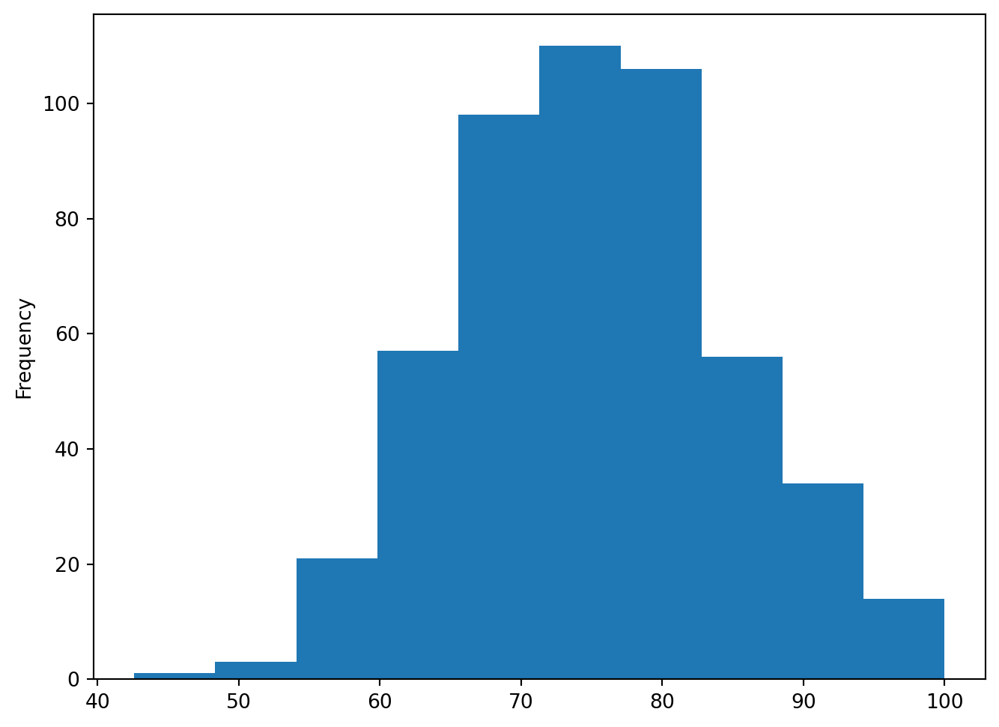
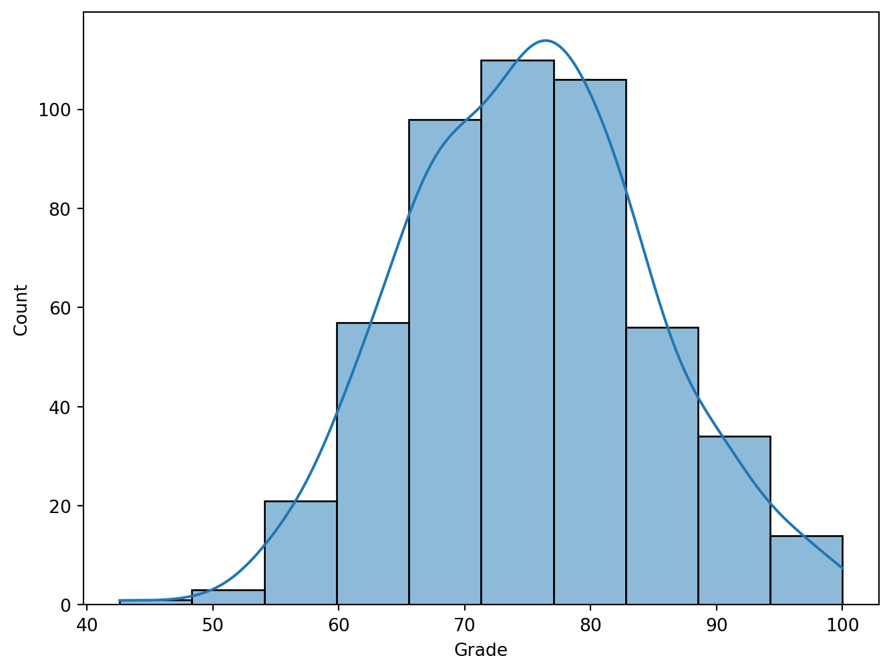
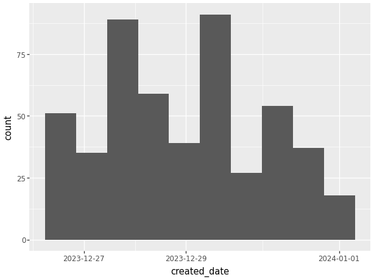

import matplotlib.pyplot as plt
import numpy as np
import pandas as pd
import seaborn as sns8 Visualization
8.1 Data Visualization with matplotlib
This section was written by Weijia Wu.
url = 'https://raw.githubusercontent.com/JoannaWuWeijia/Data_Store_WWJ/main/cleaning_data_rodent3.csv'
df = pd.read_csv(url)8.1.1 Introduction
Hi Class, my name is Weijia Wu and I’m a senior double majored in Applied Math and Statistics. The following shows a basic concepts of visulization of python.
8.1.2 Matplotlib
Matplotlib is a desktop plotting package designed for plotting and arranging data visually in Python, usually in two-dimensional. It was created by Dr. John Hunter in 2003 as an alternative to Matlab to facilitate scientific computation and data visualization in Python.
Matplotlib is widely used because of its simplicity and effectiveness.
8.1.2.1 Installation of Matplotlib
The library can be installed by typing pip install matplotlib in your terminal
pip install matplotlib8.1.2.2 Line Plot
8.1.2.2.1 Single plot with pyplot submodule
Let’s Start with an sample Line Plot example:
t = range(0, 10)
r = [i**2 for i in t]
plt.figure(figsize=(4, 4))
## Width and height in inches
plt.plot(t, r)
plt.title('Line Plot Example')
plt.show()
8.1.2.2.2 x-label, y-label, and grid:
plt.figure(figsize=(4, 4))
plt.plot(t, r)
plt.title('Line Plot Example2')
plt.xlabel('t value')
plt.ylabel('r value')
plt.grid(True)
8.1.2.2.3 Add legend:
plt.figure(figsize=(4, 4))
plt.plot(t, r)
plt.title('Line Plot Example3')
plt.xlabel('t value')
plt.ylabel('r value')
plt.grid(True)
plt.legend()No artists with labels found to put in legend. Note that artists whose label start with an underscore are ignored when legend() is called with no argument.
To add a legend to a plot in Matplotlib, you can use the legend() function.
A legend is a small area on the plot that describes each element of the graph.
To effectively use the legend, you typically need to label the elements of the plot that you want to appear in the legend using the label parameter when plotting them.
plt.legend(loc='lower right', title='Legend Title', fontsize='small')No artists with labels found to put in legend. Note that artists whose label start with an underscore are ignored when legend() is called with no argument.The help(plt.legend) command in Python is used to display the documentation for the legend function from the Matplotlib library. This documentation includes a description of what the function does, the parameters it accepts, and other relevant information such as return values and examples of how to use the function.
help(plt.legend)Help on function legend in module matplotlib.pyplot:
legend(*args, **kwargs) -> 'Legend'
Place a legend on the Axes.
Call signatures::
legend()
legend(handles, labels)
legend(handles=handles)
legend(labels)
The call signatures correspond to the following different ways to use
this method:
**1. Automatic detection of elements to be shown in the legend**
The elements to be added to the legend are automatically determined,
when you do not pass in any extra arguments.
In this case, the labels are taken from the artist. You can specify
them either at artist creation or by calling the
:meth:`~.Artist.set_label` method on the artist::
ax.plot([1, 2, 3], label='Inline label')
ax.legend()
or::
line, = ax.plot([1, 2, 3])
line.set_label('Label via method')
ax.legend()
.. note::
Specific artists can be excluded from the automatic legend element
selection by using a label starting with an underscore, "_".
A string starting with an underscore is the default label for all
artists, so calling `.Axes.legend` without any arguments and
without setting the labels manually will result in no legend being
drawn.
**2. Explicitly listing the artists and labels in the legend**
For full control of which artists have a legend entry, it is possible
to pass an iterable of legend artists followed by an iterable of
legend labels respectively::
ax.legend([line1, line2, line3], ['label1', 'label2', 'label3'])
**3. Explicitly listing the artists in the legend**
This is similar to 2, but the labels are taken from the artists'
label properties. Example::
line1, = ax.plot([1, 2, 3], label='label1')
line2, = ax.plot([1, 2, 3], label='label2')
ax.legend(handles=[line1, line2])
**4. Labeling existing plot elements**
.. admonition:: Discouraged
This call signature is discouraged, because the relation between
plot elements and labels is only implicit by their order and can
easily be mixed up.
To make a legend for all artists on an Axes, call this function with
an iterable of strings, one for each legend item. For example::
ax.plot([1, 2, 3])
ax.plot([5, 6, 7])
ax.legend(['First line', 'Second line'])
Parameters
----------
handles : list of (`.Artist` or tuple of `.Artist`), optional
A list of Artists (lines, patches) to be added to the legend.
Use this together with *labels*, if you need full control on what
is shown in the legend and the automatic mechanism described above
is not sufficient.
The length of handles and labels should be the same in this
case. If they are not, they are truncated to the smaller length.
If an entry contains a tuple, then the legend handler for all Artists in the
tuple will be placed alongside a single label.
labels : list of str, optional
A list of labels to show next to the artists.
Use this together with *handles*, if you need full control on what
is shown in the legend and the automatic mechanism described above
is not sufficient.
Returns
-------
`~matplotlib.legend.Legend`
Other Parameters
----------------
loc : str or pair of floats, default: :rc:`legend.loc`
The location of the legend.
The strings ``'upper left'``, ``'upper right'``, ``'lower left'``,
``'lower right'`` place the legend at the corresponding corner of the
axes.
The strings ``'upper center'``, ``'lower center'``, ``'center left'``,
``'center right'`` place the legend at the center of the corresponding edge
of the axes.
The string ``'center'`` places the legend at the center of the axes.
The string ``'best'`` places the legend at the location, among the nine
locations defined so far, with the minimum overlap with other drawn
artists. This option can be quite slow for plots with large amounts of
data; your plotting speed may benefit from providing a specific location.
The location can also be a 2-tuple giving the coordinates of the lower-left
corner of the legend in axes coordinates (in which case *bbox_to_anchor*
will be ignored).
For back-compatibility, ``'center right'`` (but no other location) can also
be spelled ``'right'``, and each "string" location can also be given as a
numeric value:
================== =============
Location String Location Code
================== =============
'best' (Axes only) 0
'upper right' 1
'upper left' 2
'lower left' 3
'lower right' 4
'right' 5
'center left' 6
'center right' 7
'lower center' 8
'upper center' 9
'center' 10
================== =============
bbox_to_anchor : `.BboxBase`, 2-tuple, or 4-tuple of floats
Box that is used to position the legend in conjunction with *loc*.
Defaults to `axes.bbox` (if called as a method to `.Axes.legend`) or
`figure.bbox` (if `.Figure.legend`). This argument allows arbitrary
placement of the legend.
Bbox coordinates are interpreted in the coordinate system given by
*bbox_transform*, with the default transform
Axes or Figure coordinates, depending on which ``legend`` is called.
If a 4-tuple or `.BboxBase` is given, then it specifies the bbox
``(x, y, width, height)`` that the legend is placed in.
To put the legend in the best location in the bottom right
quadrant of the axes (or figure)::
loc='best', bbox_to_anchor=(0.5, 0., 0.5, 0.5)
A 2-tuple ``(x, y)`` places the corner of the legend specified by *loc* at
x, y. For example, to put the legend's upper right-hand corner in the
center of the axes (or figure) the following keywords can be used::
loc='upper right', bbox_to_anchor=(0.5, 0.5)
ncols : int, default: 1
The number of columns that the legend has.
For backward compatibility, the spelling *ncol* is also supported
but it is discouraged. If both are given, *ncols* takes precedence.
prop : None or `~matplotlib.font_manager.FontProperties` or dict
The font properties of the legend. If None (default), the current
:data:`matplotlib.rcParams` will be used.
fontsize : int or {'xx-small', 'x-small', 'small', 'medium', 'large', 'x-large', 'xx-large'}
The font size of the legend. If the value is numeric the size will be the
absolute font size in points. String values are relative to the current
default font size. This argument is only used if *prop* is not specified.
labelcolor : str or list, default: :rc:`legend.labelcolor`
The color of the text in the legend. Either a valid color string
(for example, 'red'), or a list of color strings. The labelcolor can
also be made to match the color of the line or marker using 'linecolor',
'markerfacecolor' (or 'mfc'), or 'markeredgecolor' (or 'mec').
Labelcolor can be set globally using :rc:`legend.labelcolor`. If None,
use :rc:`text.color`.
numpoints : int, default: :rc:`legend.numpoints`
The number of marker points in the legend when creating a legend
entry for a `.Line2D` (line).
scatterpoints : int, default: :rc:`legend.scatterpoints`
The number of marker points in the legend when creating
a legend entry for a `.PathCollection` (scatter plot).
scatteryoffsets : iterable of floats, default: ``[0.375, 0.5, 0.3125]``
The vertical offset (relative to the font size) for the markers
created for a scatter plot legend entry. 0.0 is at the base the
legend text, and 1.0 is at the top. To draw all markers at the
same height, set to ``[0.5]``.
markerscale : float, default: :rc:`legend.markerscale`
The relative size of legend markers compared to the originally drawn ones.
markerfirst : bool, default: True
If *True*, legend marker is placed to the left of the legend label.
If *False*, legend marker is placed to the right of the legend label.
reverse : bool, default: False
If *True*, the legend labels are displayed in reverse order from the input.
If *False*, the legend labels are displayed in the same order as the input.
.. versionadded:: 3.7
frameon : bool, default: :rc:`legend.frameon`
Whether the legend should be drawn on a patch (frame).
fancybox : bool, default: :rc:`legend.fancybox`
Whether round edges should be enabled around the `.FancyBboxPatch` which
makes up the legend's background.
shadow : None, bool or dict, default: :rc:`legend.shadow`
Whether to draw a shadow behind the legend.
The shadow can be configured using `.Patch` keywords.
Customization via :rc:`legend.shadow` is currently not supported.
framealpha : float, default: :rc:`legend.framealpha`
The alpha transparency of the legend's background.
If *shadow* is activated and *framealpha* is ``None``, the default value is
ignored.
facecolor : "inherit" or color, default: :rc:`legend.facecolor`
The legend's background color.
If ``"inherit"``, use :rc:`axes.facecolor`.
edgecolor : "inherit" or color, default: :rc:`legend.edgecolor`
The legend's background patch edge color.
If ``"inherit"``, use take :rc:`axes.edgecolor`.
mode : {"expand", None}
If *mode* is set to ``"expand"`` the legend will be horizontally
expanded to fill the axes area (or *bbox_to_anchor* if defines
the legend's size).
bbox_transform : None or `~matplotlib.transforms.Transform`
The transform for the bounding box (*bbox_to_anchor*). For a value
of ``None`` (default) the Axes'
:data:`~matplotlib.axes.Axes.transAxes` transform will be used.
title : str or None
The legend's title. Default is no title (``None``).
title_fontproperties : None or `~matplotlib.font_manager.FontProperties` or dict
The font properties of the legend's title. If None (default), the
*title_fontsize* argument will be used if present; if *title_fontsize* is
also None, the current :rc:`legend.title_fontsize` will be used.
title_fontsize : int or {'xx-small', 'x-small', 'small', 'medium', 'large', 'x-large', 'xx-large'}, default: :rc:`legend.title_fontsize`
The font size of the legend's title.
Note: This cannot be combined with *title_fontproperties*. If you want
to set the fontsize alongside other font properties, use the *size*
parameter in *title_fontproperties*.
alignment : {'center', 'left', 'right'}, default: 'center'
The alignment of the legend title and the box of entries. The entries
are aligned as a single block, so that markers always lined up.
borderpad : float, default: :rc:`legend.borderpad`
The fractional whitespace inside the legend border, in font-size units.
labelspacing : float, default: :rc:`legend.labelspacing`
The vertical space between the legend entries, in font-size units.
handlelength : float, default: :rc:`legend.handlelength`
The length of the legend handles, in font-size units.
handleheight : float, default: :rc:`legend.handleheight`
The height of the legend handles, in font-size units.
handletextpad : float, default: :rc:`legend.handletextpad`
The pad between the legend handle and text, in font-size units.
borderaxespad : float, default: :rc:`legend.borderaxespad`
The pad between the axes and legend border, in font-size units.
columnspacing : float, default: :rc:`legend.columnspacing`
The spacing between columns, in font-size units.
handler_map : dict or None
The custom dictionary mapping instances or types to a legend
handler. This *handler_map* updates the default handler map
found at `matplotlib.legend.Legend.get_legend_handler_map`.
draggable : bool, default: False
Whether the legend can be dragged with the mouse.
See Also
--------
.Figure.legend
Notes
-----
Some artists are not supported by this function. See
:ref:`legend_guide` for details.
Examples
--------
.. plot:: gallery/text_labels_and_annotations/legend.py
8.1.2.2.4 Colors, Markers, and Line Styles
If we want two plots in the same, we need to find a way to make the distinction between them.
r2 = [i**3 for i in t]
plt.figure(figsize=(4, 4))
plt.plot(t, r, linestyle = '--', color = 'r', marker = 'o', label = 'r')
plt.plot(t, r2, linestyle = '-', color = 'b', marker = 'v', label = 'r2')
plt.title('Line Plot Example2')
plt.xlabel('t value')
plt.ylabel('r value')
plt.grid(True)
plt.show()
Use linestyle, color, and Markers to set linestyles:
## help(plt.plot)8.1.3 Example with rodent data:
Let’s use our rodent data to demonstrate the Monthly Reported data:
df['Created Date'] = pd.to_datetime(df['Created Date'])
df['Month'] = df['Created Date'].dt.to_period('M')
monthly_counts = df.groupby('Month').size()
plt.figure(figsize=(10, 8))
monthly_counts.plot(kind='line')
plt.title('Monthly Report Count')
plt.xlabel('Month')
plt.ylabel('Number of Reports')
plt.grid(True)
plt.xticks(rotation=45)
plt.show()/var/folders/cq/5ysgnwfn7c3g0h46xyzvpj800000gn/T/ipykernel_20038/3959770936.py:1: UserWarning:
Could not infer format, so each element will be parsed individually, falling back to `dateutil`. To ensure parsing is consistent and as-expected, please specify a format.
This plot shows the number of rodents in each month’s report, and we can draw the following conclusions: rodent sights occur mostly in the spring and summer, and they fall dramatically after the start of autumn (post-August).
8.1.3.1 Scatter plot
np.random.seed(8465);
x = np.random.uniform(0, 3, 10);
y = np.random.uniform(0, 3, 10);
z = np.random.uniform(0, 3, 10);
plt.scatter(x, y)
plt.xlabel('X')
plt.ylabel('Y')
plt.show()
8.1.3.2 Bar Plot
borough_counts = df['Borough'].value_counts()
plt.figure(figsize=(8, 6))
plt.bar(borough_counts.index, borough_counts.values, color='green')
plt.xlabel('Borough')
plt.ylabel('Number of Rodent Sightings')
plt.title('Rodent Sightings by Borough')
plt.xticks(rotation=45) # Rotate the X axis by 45 degrees to show the long labels
plt.show()8.1.3.3 Multiple plots using subplots submodule
df['Created Date'] = pd.to_datetime(df['Created Date'])
df['Date'] = df['Created Date'].dt.date
daily_reports = df.groupby(['Date', 'Incident Zip']).size().reset_index(name='Counts')
sample_zip = daily_reports['Incident Zip'].dropna().iloc[0]
sample_data = daily_reports[daily_reports['Incident Zip'] == sample_zip]
## 2x2 Plot
fig, axs = plt.subplots(2, 2, figsize=(8, 8))
## Line Plot
axs[0, 0].plot(sample_data['Date'], sample_data['Counts'], '-o', color='green')
axs[0, 0].set_title(f'Linear Plot of Reports for Zip {sample_zip}')
axs[0, 0].tick_params(labelrotation=45)
## Box Plot
axs[0, 1].boxplot(df['Y Coordinate (State Plane)'].dropna())
axs[0, 1].set_title('Boxplot of Y Coordinate')
## barplot
status_counts = df['Status'].value_counts()
axs[1, 0].bar(status_counts.index, status_counts.values, color='skyblue')
axs[1, 0].set_title('Barplot of Status Counts')
axs[1, 0].tick_params(labelrotation=45)
## histogram
axs[1, 1].hist(df['Latitude'].dropna(), bins=30, color='orange')
axs[1, 1].set_title('Histogram of Latitude')
plt.tight_layout()
plt.show()8.1.3.4 Save the files
help(plt.savefig)allows you to save the current figure created by Matplotlib to a file. You can specify the filename and various options to control the format, quality, and layout of the output file.
## help(plt.savefig)8.1.4 Pandas
Pandas plotting is built on top of Matplotlib, and one of its main benefits is that it allows you to generate plots with fewer lines of code directly from Pandas data structures like DataFrames and Series. This integration simplifies the process of visualizing data for analysis.
8.1.4.1 Line Plot
8.1.4.1.1 Single plot
monthly_counts.plot(kind='line')
Because the line plot is default in pandas plots, you can omit the (kind=‘line’)
When plotting with the .plot() method in Pandas, it is true that you can generate basic plots with fewer lines of code, due to the fact that Pandas automatically handles some of the basic settings, such as setting the x-axis labels automatically. However, for more detailed chart customization, such as setting gridlines, rotating x-axis labels, and so on, you may need additional Matplotlib commands to implement them.
plt.figure(figsize=(8, 6))
monthly_counts.plot(kind='line')
plt.title('Monthly Report Count')
plt.xlabel('Month')
plt.ylabel('Number of Reports')
plt.grid(True)
plt.xticks(rotation=45)
## For longer tags, avoid overlapping
plt.show()
8.1.4.1.2 Multi-Lineplot
The following is showing several line plots in the same figure.
community_counts = df['Community Districts'].value_counts().sort_index()
city_council_counts = df['City Council Districts'].value_counts().sort_index()
police_precincts_counts = df['Police Precincts'].value_counts().sort_index()
counts_df = pd.DataFrame({
'Community Districts': community_counts,
'City Council Districts': city_council_counts,
'Police Precincts': police_precincts_counts
})
counts_df = counts_df.fillna(0)
##Fill missing values to 0
counts_df[['Community Districts', 'City Council Districts',
'Police Precincts']].plot() When you use the .plot() method on a Pandas DataFrame to create a multi-line plot, each line in the plot is automatically assigned a different color to help distinguish between the different data columns visually. The colors are chosen from a default color cycle provided by Matplotlib.
If you want to customize the color:
counts_df[['Community Districts', 'City Council Districts', 'Police Precincts']].plot(
color=['red', 'green', 'blue'] # Custom colors for each line
)
8.1.4.2 Additional arguments
For more info pleased check:
zsh:1: bad pattern: [additional## help(plt.plot)8.1.4.3 Bar Plot
For categorical data, one of common visualization is the barplot.
- Generated using
df.plot.bar()method, for horizontal versiondf.plot.barh().
8.1.4.3.1 Side-by-side Bar Plot:
Let’s use Borough and Location Type to generate a side-by-side bar plot, one horizontal and one vertical:
fig, axs = plt.subplots(nrows=1, ncols=2, figsize=(8, 6))
## Vertical bar plot for Borough counts
df.groupby(['Borough']).size().plot.bar(ax=axs[0], color='skyblue', rot=0)
axs[0].set_title('Bar plot for Borough')
## Horizontal bar plot for Location Type counts
df.groupby(['Location Type']).size().plot.barh(ax=axs[1], color='lightgreen')
axs[1].set_title('Bar plot for Location Type')
plt.tight_layout()
plt.show()Similiar with axs in matplotlib:
nrows=1means there will be 1 row of subplots.ncols=2means there will be 2 columns of subplots.
8.1.4.3.2 Grouped Bar Plot
This type of plot is useful for comparing the distribution within each class side by side.
class_Borough = pd.crosstab(df["Borough"], df["Status"])
class_Borough.plot.bar(rot=45, figsize=(8, 6))
8.1.4.3.3 Stacked Bar Plot
This plot is useful for comparing the total counts across borough while still being able to see the proportion of each borough within each class.
class_Borough.plot.bar(stacked=True)
8.1.4.4 Histogram and Density Plots
For numeric data, histogram allows us to see the distribution (center shape, skewness) of the data.
Histogram can be generated using df.plot.hist() method
Since we have limited numeric data in our rodent data, I used student achievement data to present it:
url2 = 'https://raw.githubusercontent.com/JoannaWuWeijia/Data_Store_WWJ/main/grades_example.csv'
df2 = pd.read_csv(url2)df2["Grade"].plot.hist(bins = 10, figsize=(8, 6))
As can be seen from the plot, the students’ scores show a normal distribution, with most of them clustered in the 70-80 range
df2["Grade"].plot.density()
8.1.4.5 Scatter Plots
When dealing with two variables, scatter plot allow us to examine if there is any correlation between them.
Scatter can be generated using df.plot.scatter(x = col1, y = col2) method.
url3 = 'https://raw.githubusercontent.com/JoannaWuWeijia/Data_Store_WWJ/main/student_example3.csv'
df3 = pd.read_csv(url3)df3.plot.scatter(x="Weight", y="Height", figsize=(8, 6))
As you can see it’s roughly a linear regression, and I’ll cover how to add a regression line in the next sns section.
8.1.5 Seaborn
Seaborn is designed to work directly with pandas DataFrames, making plotting more convenient by allowing direct use of DataFrame columns for specifying data in plots.
Seaborn makes it easy to add linear regression lines and other statistical models to your charts, simplifying the process of statistical data visualization.
Seaborn’s default styles and color are more aesthetically pleasing and modern compared to Matplotlib.
8.1.5.1 Installation of Seaborn
pip install seaborn8.1.5.2 Histogram and Density Plots
## help(sns.histplot) plt.figure(figsize=(8, 6))
sns.histplot(df2['Grade'], bins=10, kde = True)
bins: The number of bars in the histogram. More bins can make the data distribution more detailed, but too many may cause the chart to be difficult to understand; fewer bins may not be able to show the data distribution accurately. kde: (Kernel Density Estimate Line) a density curve will be added to the histogram, which is generated by kernel density estimation and can help understand the shape of the data distribution
8.1.5.3 Scatter plot with Regression line
I used an example with less data to be able to show it. We can see that the height and weight of the students are directly proportional.
df4 = pd.DataFrame({
'Student': ['Alice', 'Bob', 'Charlie', 'David',
'Eva', 'Fiona', 'George', 'Hannah', 'Ian', 'Julia'],
'Height': [160, 172, 158, 165, 170, 162, 175, 168, 180, 155],
'Weight': [55, 72, 60, 68, 62, 56, 80, 65, 75, 50]})
plt.figure(figsize = (8, 6))
sns.regplot(x='Weight', y='Height', data=df4)
8.1.5.4 Categorical Data
8.1.5.4.1 barplot
np.random.seed(0)
genders = np.random.choice(['Male', 'Female'], size=500)
classes = np.random.choice(['A', 'B', 'C', 'D'], size=500)
grades = np.random.choice(['Excellent', 'Good', 'Average', 'Poor'], size=500)
df4 = pd.DataFrame({'Gender': genders, 'Class': classes, 'Grades': grades})sns.catplot(x='Class', hue='Gender', col='Grades',
kind='count', data=df4, height=5, col_wrap=2)
plt.show()
x='Class': This sets the x-axis to represent different classes, so each class will have its own set of bars in the plot.hue='Gender': This parameter adds a color coding (hue) based on the ‘Gender’ columncol='Grades': This creates separate subplots (columns) for each unique value in the ‘Grades’ column (e.g., Excellent, Good, Average, Poor), effectively grouping the data by grades.col_wrap=2: Limits the number of these subplots to 2 per row. If there are more than 2 unique grades, additional rows will be created to accommodate all the subplots.kind='count': Specifies the kind of plot to draw. In this case,'count'means it will count the occurrences of each category combination and display this as bars in the plot.height=5: Sets the height of each subplot to 5 inches.
8.1.5.4.2 Box Plot
sns.boxplot(x='Gender', y='Grades', hue='Class', data=df4)
plt.show()
x='Gender': x-axis variabley='Grades': y-axis variable, which in this case is ‘Grades’. Since ‘Grades’ is a categorical variable with values like ‘Excellent’, ‘Good’, ‘Average’, ‘Poor’col='Class': Creates separate subplots for each unique value in the ‘Class’ column, effectively grouping the data by class.
8.1.5.4.3 Categorical Data Help
##help(sns.catplot)8.1.6 Conclusion
Matplotlib is the foundation for making plots in Python.
pandas uses Matplotlib for its plotting features but is mainly for handling data.
Seaborn makes Matplotlib prettier and easier to use, especially with pandas data.
8.1.7 References
- https://matplotlib.org/stable/users/project/history.html
- https://matplotlib.org/stable/gallery/lines_bars_and_markers/simple_plot.html
- https://www.simplilearn.com/tutorials/python-tutorial/matplotlib
- https://www.w3schools.com/python/pandas/pandas_plotting.asp
- https://github.com/mwaskom/seaborn/tree/master/seaborn
- https://seaborn.pydata.org/installing.html
- https://ritza.co/articles/matplotlib-vs-seaborn-vs-plotly-vs-MATLAB-vs-ggplot2-vs-pandas/
8.2 Grammar of Graphics with Plotnine
This section was written by Olivia Massad.
8.2.1 Introduction
Hello everyone! My name is Olivia Massad and I am a junior Statistical Data Science Major. I am very interested in sports statistics and analytics, especially involving football, and am very excited to learn more about coding and data science in this class. Today I will be talking about grammar of graphics for python, using Plotnine. This is a new topic for me so I am very excited to show you all what we can do with it.
8.2.2 What is Grammar of Graphics?
Similarly to how languages have grammar in order to structure language and create a standard for how sentences and words should be arranged, grammar of graphics provides the framework for a consistent way to structure and create statistical visualizations. This framework helps us to create graphs and visualizations which can be widely understood due to the consistent structure. The major components of grammar of graphics are:
Data: our datasets and the what components you want to visualize.
Aesthetics: axes, position of data points, color, shape, size.
Scale: scale values or use specific scales depending on multiple values and ranges.
Geometric objects: how data points are depicted, whether they’re points, lines, bars, etc.
Statistics: statistical measures of the data included in the graphic, including mean, spread, confidence intervals, etc.
Facets: subplots for specific data dimensions.
Coordinate system: cartesian or polar.
8.2.3 What can you do with Plotnine?
Plotnine is a program which implements grammar of graphics in order to create data visualizations and graphs using python. It is based on ggplot2 and allows for many variations within graphs. Some examples of things we can create with plotnine are:
- Bar Charts
- Histograms
- Box Plots
- Scatter Plots
- Line Charts
- Time Series
- Density Plots
- etc.
8.2.4 Using Plotnine
In order to use plotnine we first need to install the package using our command line.
With conda: “conda install -c conda-forge plotnine”
With pip: “pip install plotnine pip install plotnine[all]”
Now that plotnine is installed, we must call the it in python.
from plotnine import *
from plotnine.data import *Now that plotnine is installed and imported, we can begin to make graphs and plots. Below are different examples of visualizations we can make using plotnine and the personalizations we can add to them. For these graphics I used the rodent sighting data from the NYC open data 311 requests. We also will need pandas and numpy for some of these graphs so we need to import those as well. Additionally, because the data set is so large, we will only be lookng at the first 500 complaints.
from plotnine import *
from plotnine.data import *
import pandas as pd
import numpy as np
import os
folder = 'data'
file = 'rodent_2022-2023.feather'
path = os.path.join(folder, file)
data = pd.read_feather(path)
data_used = data.head(500)8.2.4.1 Bar Chart
One common type of visualization we can create with plotnine is a bar chart. For this graph we will look at the data for the descriptors of each complaint.
(ggplot(data_used, aes(x = 'descriptor'))
+ geom_bar())
While this code provides us with a nice simple chart, because we are using plotnine, we can make some major improvements to the visualization to make it easier to read and more appealing. Some simple things we can do are:
- Add a title.
- Color code the bars.
- Change the orientation of the graph.
- Add titles to the axes.
(ggplot(data_used, aes(x = 'descriptor', fill = 'descriptor'))
# Color code the bars.
+ geom_bar() # Bar Chart
+ ggtitle('Descriptor Counts') # Add a title.
+ coord_flip() # Change the orientation of the graph.
+ xlab("Descriptor") # Add title to x axis.
+ ylab("Number of Complaints") # Add titles to y axis.
)Some more complex changes we can make to our graph are:
- Change the orientation of the words on the axes to make them easier to read.
- Add color coded descriptors to each bar.
(ggplot(data_used, aes(x = 'descriptor', fill = 'borough'))
# Add color coded descriptors.
+ geom_bar() # Bar Chart
+ ggtitle('Descriptor Counts') # Add a title.
+ xlab("Descriptor") # Add title to x axis.
+ ylab("Number of Complaints") # Add titles to y axis.
+ theme(axis_text_x=element_text(angle=45))
# Change the orientation of the words.
)8.2.4.2 Scatter Plot
Another common visualization we can create is a scatterplot. When looking at the data from the 311 requests, we can see that there are many data points for locations of these complaints. A scatter plot would be a great way to see the location of the complaints by graphing the longitudes and latitudes. In order to better see the points, for this graph we will only use the first 200 complaints.
data_scatter = data.tail(200)
(ggplot(data_scatter, aes(x = 'longitude', y = 'latitude'))
+ geom_point())
Similarly to the original code for the bar chart, this code provides a very simple scatter plot. Plotnine allows us to add many specializations to the scatterplot in order to differentiate the points from each other. We can:
- Add color to the points.
- Differentiate using point size.
- Differentiate using point shape.
(ggplot(data_scatter, aes(x = 'longitude', y = 'latitude',
color = 'location_type')) # Add color to the points.
+ geom_point())(ggplot(data_scatter, aes(x = 'longitude', y = 'latitude',
size = 'descriptor', # Differentiate using point size.
shape = 'borough')) # Differentiate using point shape.
+ geom_point())/Users/junyan/work/teaching/ids-s24/ids-s24/.myvenv/lib/python3.12/site-packages/plotnine/scales/scale_size.py:51: PlotnineWarning: Using size for a discrete variable is not advised.
We can see that due to the close data points, filtering the data using size and shape can become a little congested. One thing we can do to fix this while still viewing the same data is through the use of “facet_grid”.
(ggplot(data_scatter, aes(x = 'longitude', y = 'latitude',
shape = 'borough')) # Differentiate using point shape.
+ geom_point()
+ facet_grid('descriptor ~ .') # Create multiple plots.
)(ggplot(data_scatter, aes(x = 'longitude', y = 'latitude'))
+ geom_point()
+ facet_grid('descriptor ~ borough')
# Create multiple plots with 2 conditions.
+ theme(strip_text_y = element_text(angle = 0), # change facet text angle
axis_text_x=element_text(angle=45)) # change x axis text angle
)
8.2.4.3 Histogram
The last common graph we will cover using plotnine is a histogram. Here we will use the created date data as a continuous variable. Using plotnine we are able to make many of the same personalizations we were able to do with bar charts.
data_used['created_date']=pd.to_datetime(
data_used['created_date'],
format = "%m/%d/%Y %I:%M:%S %p", errors='coerce')
(ggplot(data_used, aes(x='created_date'))
+ geom_histogram())/var/folders/cq/5ysgnwfn7c3g0h46xyzvpj800000gn/T/ipykernel_20038/966048317.py:1: SettingWithCopyWarning:
A value is trying to be set on a copy of a slice from a DataFrame.
Try using .loc[row_indexer,col_indexer] = value instead
See the caveats in the documentation: https://pandas.pydata.org/pandas-docs/stable/user_guide/indexing.html#returning-a-view-versus-a-copy
/Users/junyan/work/teaching/ids-s24/ids-s24/.myvenv/lib/python3.12/site-packages/plotnine/stats/stat_bin.py:109: PlotnineWarning: 'stat_bin()' using 'bins = 10'. Pick better value with 'binwidth'.
Now that we have a simple histogram with our data we can add specializations, inclduing:
- Change width of bins.
- Change oreintation of graph.
- Add color coded descriptors.
- Change outline color.
- Change the orientation of the words on the axes to make them easier to read.
(ggplot(data_used, aes(x='created_date', fill = 'borough'))
# Add color coded descriptors.
+ geom_histogram(binwidth=1, # Change width of bins
color = 'black') # Change outline color.
+ theme(axis_text_x=element_text(angle=45))
# Change the orientation of the words.
)
(ggplot(data_used, aes(x='created_date', fill = 'borough'))
# Add color coded descriptors.
+ geom_histogram(binwidth=1, # Change width of bins
colour = 'black') # Change outline color.
+ coord_flip() # Change oreintation of graph.
)
While we’re able to color code the histogram to show other descriptors of the data, another way we can do this with plotnine is through the use of multiple graphs. Using “facet_wrap” we can create a multi facet graph with the same data.
(ggplot(data_used, aes(x='created_date'))
+ geom_histogram(binwidth=1) # Change width of bins
+ facet_wrap('borough') # Create multiple graphs.
+ theme(axis_text_x=element_text(angle=45))
# Change the orientation of the words.
)
8.2.4.4 Density Plot
The last visualization we’re going to look at is density plots. While less common than the graphs previously discussed, density plots show the distribution of a specific variable.
(ggplot(data_used, aes(x='created_date'))
+ geom_density())Above we can see a very simple density graph with very little description. Using plotnine we are able to:
- Add color coded descriptors.
- Scale groups by relative size.
- Change the orientation of the words on the axes to make them easier to read.
(ggplot(data_used, aes(x='created_date', color = 'descriptor'))
#Add color coded descriptors.
+ geom_density()
+ theme(axis_text_x=element_text(angle=45))
# Change the orientation of the words.
)
(ggplot(data_used, aes(x='created_date', color = 'descriptor'))
#Add color coded descriptors.
+ geom_density(aes(y=after_stat('count')))
# Scale groups by relative size.
+ theme(axis_text_x=element_text(angle=45))
# Change the orientation of the words.
)
8.2.5 Resources
8.2.6 References
“Plotnine.Geoms.Geom_bar¶.” Plotnine.Geoms.Geom_bar - Plotnine Commit: D1f7dbf Documentation, plotnine.readthedocs.io/en/stable/generated/ plotnine.geoms.geom_bar.html. Accessed 13 Feb. 2024.
“Plotnine.Geoms.Geom_density¶.” Plotnine.Geoms.Geom_density - Plotnine Commit: D1f7dbf Documentation, plotnine.readthedocs.io/en/ stable/generated/plotnine.geoms.geom_density.html. Accessed 17 Feb. 2024.
“Plotnine.Geoms.Geom_histogram¶.” Plotnine.Geoms.Geom_histogram - Plotnine Commit: D1f7dbf Documentation, plotnine.readthedocs.io/en/ stable/generated/plotnine.geoms.geom_histogram.html#plotnine. geoms.geom_histogram. Accessed 17 Feb. 2024.
“Plotnine.Geoms.Geom_point¶.” Plotnine.Geoms.Geom_point - Plotnine Commit: D1f7dbf Documentation, plotnine.readthedocs.io/en/ stable/generated/plotnine.geoms.geom_point.html. Accessed 16 Feb. 2024.
“Plotnine.” PyPI, pypi.org/project/plotnine/. Accessed 13 Feb. 2024.
Sarkar, Dipanjan (DJ). “A Comprehensive Guide to the Grammar of Graphics for Effective Visualization of Multi-Dimensional…” Medium, Towards Data Science, 13 Sept. 2018, towardsdatascience.com/a-comprehensive-guide-to-the- grammar-of-graphics-for-effective-visualization-of-multi-dimensional-1f92b4ed4149.
8.3 Handling Spatial Data with GeoPandas
This section was written by Pratham Patel.
8.3.1 Introduction and Installation
Hello! my name is Pratham Patel and I am a Senior due to graduate this semster with a Bachelor’s Degree of Science in Mathematics/Statistics with a Computer Science minor. I hope to gain skills in using various different packages of Python in this course, as well as understand even more about the Data Science field. An example of learning new Python packages is the topic I will present today on the geopandas package. GeoPandas is an extension of the pandas package to support geographic data in its dataframes.
The GeoPandas package can be installed via the terminal using any of the following commands.
The documentation recommends: conda install -c conda-forge geopandas
Standard conda install: conda install geopandas
Using pip: pip install geopandas
8.3.2 Base Concepts
GeoPandas relvolves around the GeoDataFrame object, which is essentially the pandas DataFrame object, with all the traditional capabilities in addition to the ability store and operate on geometry columns.
The geometry types include points, lines and closed polygons (the first and last coordinates in the list must be the same).
The objects made by shapely.geometry can represent these geometry types:
from shapely.geometry import Point, LineString, Polygon
import geopandas as gpd
point = Point(0, 1)
gdf1 = gpd.GeoDataFrame(geometry=[point])
line = LineString([(0, 0), (1, 1)])
gdf2 = gpd.GeoDataFrame(geometry=[line])
#note: the first and last element of
#the list of tupled points are the same
polygon = Polygon([(0, 0), (0, 2), (2, 2), (2, 0), (0, 0)])
gdf3 = gpd.GeoDataFrame(geometry=[polygon])gdf1| geometry | |
|---|---|
| 0 | POINT (0.00000 1.00000) |
Some of the basic attributes of a GeoSeries include: * length: returns length of a line
gdf2.length0 1.414214
dtype: float64area: returns the area of the polygon
gdf3.area0 4.0
dtype: float64bounds: gives the bounds of each row in a column of geometrytotal_bounds: gives the bounds of a geometry seriesgeom_type: returns geometry type
gdf1.geom_type0 Point
dtype: objectis_valid: return True for valid geometries and false otherwise (mostly important for polygons).
gdf3.is_valid0 True
dtype: boolNext, we will cover various methods to be used on GeoSeries objects:
distance(): returns the Series with the minimum distance from each entry to another geometry or Series (argumentother).- Note: a secondary argument
alignis a boolean to align the GeoSeries by index if set to True
- Note: a secondary argument
gdf2.distance(Point((1,0)))
gdf2.distance(LineString([(0, 2), (1, 2)]))0 1.0
dtype: float64centroid: returns a new GeoSeries with the center of each row’s geometry.
gdf3.centroid0 POINT (1.00000 1.00000)
dtype: geometrycontains(): returns True if the shape contains a specific geometry or Series.- parameters
otherandalign
- parameters
gdf3.contains(Point((0.5, 1.5)))0 True
dtype: boolgdf3.contains(gdf1)0 False
dtype: boolintersects()returns true if shape intersects another geometry of series- parameters
otherandalign
- parameters
8.3.3 Reading Files into GeoDataFrame’s
The function geopandas.read_file() is the best way to read a file with both data and geometry into a GeoDataFrame object. From here, we will be using the nyc rodent data and visualize it. The code below converts every incident’s location into a point on the geometry.
# Reading csv file
import pandas as pd
import numpy as np
# Shapely for converting latitude/longtitude to a point
from shapely.geometry import Point
# To create GeoDataFrame
import geopandas as gpd
#read in the feather file as a generic pandas DataFrame
rat_22_23 = pd.read_feather('data/rodent_2022-2023.feather')
# creating geometry using shapely (removing missing points) for the already built in longitude and latitude coordinates
geometry = [Point(xy) for xy in zip(rat_22_23["longitude"], rat_22_23["latitude"]) if not Point(xy).is_empty]
# creating geometry column to be used by geopandas using the points_from_xy method
geo = gpd.points_from_xy(rat_22_23["longitude"], rat_22_23["latitude"])
# coordinate reference system (epsg:4326 implies geographic coordinates)
crs = {'init': 'epsg:4326'}
# create GeoDataFrame (takes care of the missing coordinates)
rodent_gdf = gpd.GeoDataFrame(rat_22_23.loc[~pd.isna(rat_22_23["longitude"]) & ~pd.isna(rat_22_23["latitude"])], crs=crs, geometry=geometry)/Users/junyan/work/teaching/ids-s24/ids-s24/.myvenv/lib/python3.12/site-packages/pyproj/crs/crs.py:141: FutureWarning: '+init=<authority>:<code>' syntax is deprecated. '<authority>:<code>' is the preferred initialization method. When making the change, be mindful of axis order changes: https://pyproj4.github.io/pyproj/stable/gotchas.html#axis-order-changes-in-proj-6Here, we can take a view at the new GeoDataFrame:
rodent_gdf.head()| unique_key | created_date | closed_date | agency | agency_name | complaint_type | descriptor | location_type | incident_zip | incident_address | ... | latitude | longitude | location | zip_codes | community_districts | borough_boundaries | city_council_districts | police_precincts | police_precinct | geometry | |
|---|---|---|---|---|---|---|---|---|---|---|---|---|---|---|---|---|---|---|---|---|---|
| 0 | 59893776 | 2023-12-31 23:05:41 | 2023-12-31 23:05:41 | DOHMH | Department of Health and Mental Hygiene | Rodent | Rat Sighting | 3+ Family Apt. Building | 11216 | 265 PUTNAM AVENUE | ... | 40.683857 | -73.951645 | (40.683855196486164, -73.95164557951071) | 17618.0 | 69.0 | 2.0 | 49.0 | 51.0 | 51.0 | POINT (-73.95164 40.68386) |
| 1 | 59887523 | 2023-12-31 22:19:22 | 2024-01-03 08:47:02 | DOHMH | Department of Health and Mental Hygiene | Rodent | Rat Sighting | Commercial Building | 10028 | 1538 THIRD AVENUE | ... | 40.779243 | -73.953690 | (40.77924175816874, -73.95368859796383) | 10099.0 | 23.0 | 4.0 | 1.0 | 11.0 | 11.0 | POINT (-73.95369 40.77924) |
| 2 | 59891998 | 2023-12-31 22:03:12 | 2023-12-31 22:03:12 | DOHMH | Department of Health and Mental Hygiene | Rodent | Rat Sighting | 3+ Family Apt. Building | 10458 | 2489 TIEBOUT AVENUE | ... | 40.861694 | -73.894989 | (40.861693023118924, -73.89499228560491) | 10936.0 | 6.0 | 5.0 | 22.0 | 29.0 | 29.0 | POINT (-73.89499 40.86169) |
| 3 | 59887520 | 2023-12-31 21:13:02 | 2024-01-03 09:33:43 | DOHMH | Department of Health and Mental Hygiene | Rodent | Mouse Sighting | 3+ Family Apt. Building | 11206 | 116 JEFFERSON STREET | ... | 40.699741 | -73.930733 | (40.69974221739347, -73.93073474327662) | 17213.0 | 42.0 | 2.0 | 30.0 | 53.0 | 53.0 | POINT (-73.93073 40.69974) |
| 4 | 59889297 | 2023-12-31 20:50:10 | NaT | DOHMH | Department of Health and Mental Hygiene | Rodent | Rat Sighting | 1-2 Family Dwelling | 11206 | 114 ELLERY STREET | ... | 40.698444 | -73.948578 | (40.69844506428295, -73.94858040356128) | 17213.0 | 69.0 | 2.0 | 49.0 | 51.0 | 51.0 | POINT (-73.94858 40.69844) |
5 rows × 48 columns
8.3.4 Plotting
The new geometry allows us to plot the data easily.
#standard plot of every single rodent incident
rodent_gdf.plot()
#color the plot by borough
rodent_gdf.plot(column = 'borough', legend=True)
#color the plot by borough, with more transparent markers
rodent_gdf.plot(column = 'borough', alpha = 0.01)
#color by the descriptor of the incident
rodent_gdf.plot(column = 'descriptor', legend=True)
#Plot the missing information for borough
rodent_gdf.plot(column='borough', missing_kwds={'color':'red'})
#color the plot by zipcode
rodent_gdf.plot(column = 'incident_zip', legend=True)

Note that if an integer column is passed, the legend will present the key as a gradient by default.
You can individualize each zipcode using categorical=True, though be sure the list of unique integers is not too large.
rodent_gdf.plot(column = 'incident_zip', legend=True, categorical=True)
The geographic visualizations allow us to try to observe some trends amongst the reported rodent incident we see.
8.3.5 Interactive Maps
A very interesting aspect is the ability to create interactive graphs using the .explore() method.
Note that folium, matplotlib, and mapclassify are necessary for the .explore() function.
#interactive map with incidents colored by borough
rodent_gdf.explore(column='borough', legend=True)TypeError: Object of type Timestamp is not JSON serializable<folium.folium.Map at 0x12ac8e360>This map lets us specifically find various points and examine them and their surroudings.
8.3.6 Setting and Changing Projections
In the code, a Coordinate Reference System(CRS) was set using crs = {'init':'epsg:4326'}. CRS can be set on on initialized GeoDataFrame using the .set_crs function. We can do this for our previous example gdf3:
gdf3 = gdf3.set_crs("EPSG:4326")
gdf3.plot()There are other CRS’s that can be set by the .to_crs() function. Examples include: * ESPG:2263 - coordinates labeled in feet * ESPG:3395 - World Mercator System
8.3.7 References
- GeoPandas Documentation:
- https://geopandas.org/en/stable/index.html
- NYC 311 Service Request
- https://data.cityofnewyork.us/Social-Services/311-Service-Requests-from-2010-to-Present/erm2-nwe9/about_data